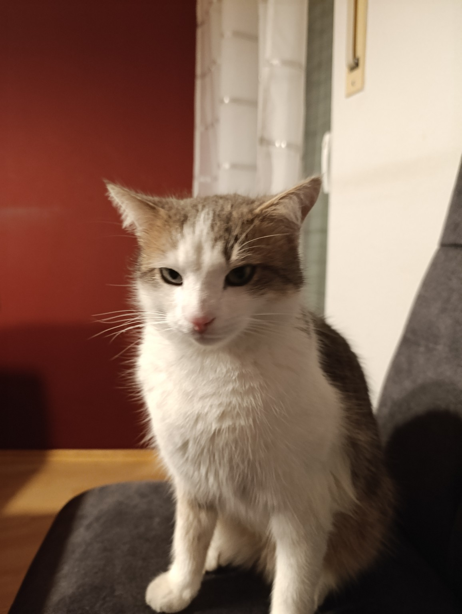
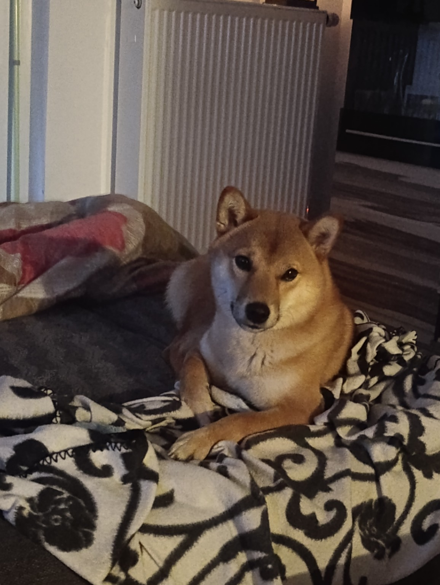

Aki Agoraki – Der Babykater
Aki ist Emmanuels bester tierischer Freund. Verspielt, neugierig und immer an seiner Seite. 🐱
„Ich und Aki sind unaufhaltsam.“ – Emmanuel
Yuki – Der Shiba Inu
Yuki ist der verspielte Hund von Elena. Ein echter Freigeist mit flauschigem Herzen. 🐶
„Er macht, was er will... aber ist sooo süß!“
Emmanuels Musik – Michael Jackson Style
Hier hörst du exklusiv den Remix „Dancing in Shadows“ – ein AI-MJ-Masterpiece!